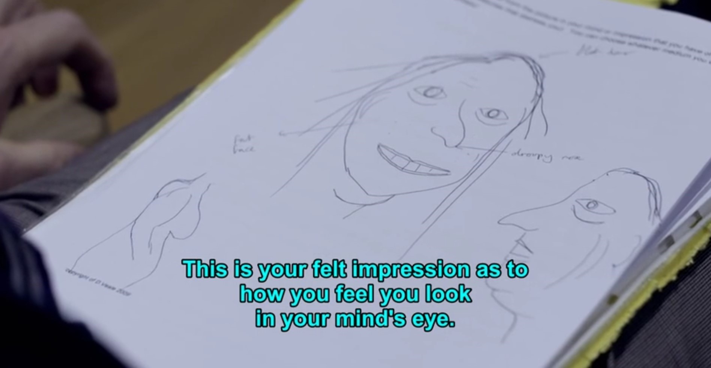
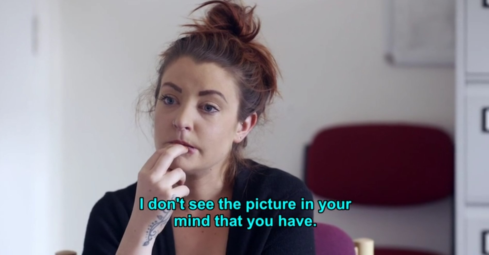

Initial Research
Documentaries and websites have provided us with a foundational understanding of Body Dysmorphic Disorder (BDD).


Key Notes
1. BDD, a prevalent disorder, remains largely overlooked.
- Body dysmorphic disorder affects 1 in 50 individuals worldwide.
- Mental health professionals frequently fail to diagnose and treat BDD, contributing to its hidden nature.
- Merely 5% of those with BDD receive treatment from mental health services.
2. BDD patients amplify their perceived physical flaws.
- They invest considerable time in hiding what they believe to be defects, utilizing heavy makeup or resorting to cosmetic surgery, despite limited relief from distress.
- BDD patients experience anxiety in social settings and often avoid them, overly concerned about others' perception and judgment.
- They engage in excessive dieting and exercise.

Self-Portrait of a BDD patient

The real appearance of her
3. Mirrors play a very important role in BDD patients' life.
- BDD patients exhibit both prolonged periods in front of mirrors and deliberate avoidance of mirrors.
- In general, mirrors are described by BDD patients as controlling, imprisoning, and disempowering forces that exert a crippling and paralyzing effect on their lives.